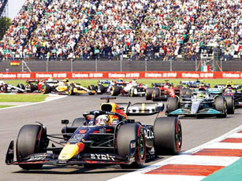

El Campeonato Mundial de Fórmula 1 de la FIA, más conocido como Fórmula 1, F1 o Fórmula Uno, es la principal competición de automovilismo internacional y el campeonato de deportes de motor más popular y prestigioso del mundo. La entidad que la dirige es la Federación Internacional del Automóvil (FIA). Desde septiembre de 2016, tras la adquisición de Formula One Group, la empresa estadounidense Liberty Media es la responsable de gestionar y operar el campeonato.
| Sponsors: | Motores: | Corredores: |
| Pirelli, Rolex | Motores Ferrari, Motores Mercedes y Motores Honda RBPT | Max Verstappen.Sergio Pérez.George Russell.Lewis Hamilton. |
A cada carrera se le denomina Gran Premio y el torneo que las agrupa es el Campeonato Mundial de Fórmula 1. La mayoría de los circuitos de carreras donde se celebran los Grandes Premios son autódromos, aunque también se utilizan circuitos callejeros y anteriormente se utilizaron circuitos ruteros. A su vez, los automóviles utilizados son monoplazas con la última tecnología disponible, siempre limitadas por un reglamento técnico; algunas mejoras que fueron desarrolladas en la Fórmula 1 terminaron siendo utilizadas en automóviles comerciales, como el freno de disco.
La competición se celebra en fin de semana y duran tres días. El viernes con dos sesiones de entrenamientos libres, los pilotos prueban y adaptan su coche al circuito, tanto a nivel de reglajes como de neumáticos. El sábado se realiza otra sesión de entrenamientos, de una hora, y a continuación se realiza la clasificación. El domingo se corre la carrera. Los monoplazas se colocan en la parrilla de salida treinta minutos antes de la hora estándar estipulada del comienzo del Gran Premio o 13:00 GMT, aunque ocasionalmente los horarios pueden variar, principalmente por su comodidad de retransmisión en Europa, sobre todo cuando las carreras son en Asia u Oceanía.
El inicio de la Fórmula 1 moderna se remonta al año 1950, en el que participaron escuderías como Ferrari, Alfa Romeo y Maserati. Algunas fueron reemplazadas por otras nuevas como McLaren, Williams, Red Bull y otras que volvieron como Mercedes se han alzado varias veces con el Campeonato Mundial de Constructores. Por su parte, los pilotos deben contar con la superlicencia de la FIA para competir, que se obtiene por los resultados en otros campeonatos.
Las carreras de Gran Premio tienen sus raíces en las carreras automovilísticas surgidas en Francia en 1894 . En un principio se trataba de eventos individuales, sin conexión y en caminos de tierra, prácticamente sin ninguna limitación.4 De 1927 a 1934, el número de carreras consideradas Gran Premio creció hasta alcanzar dieciocho en 1934